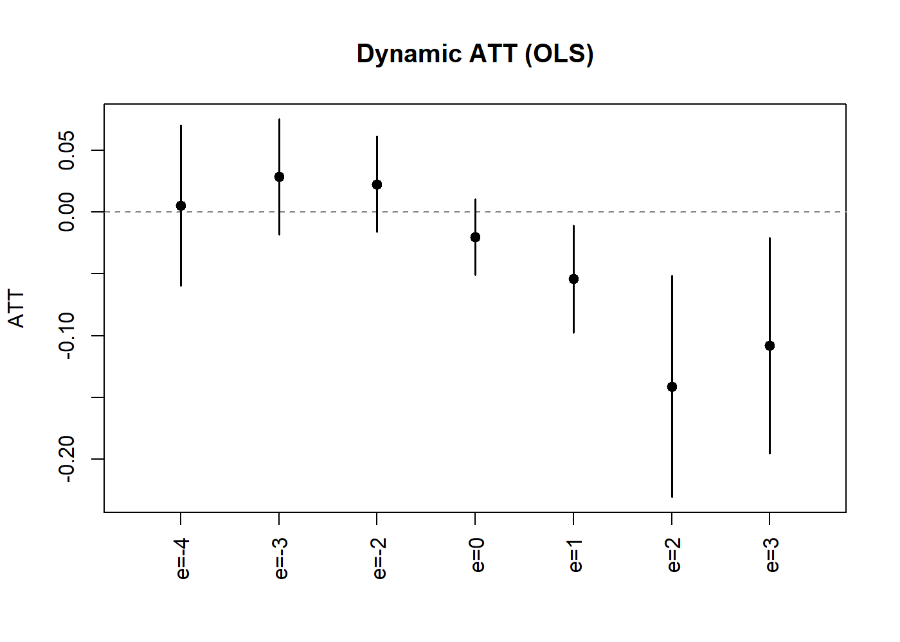
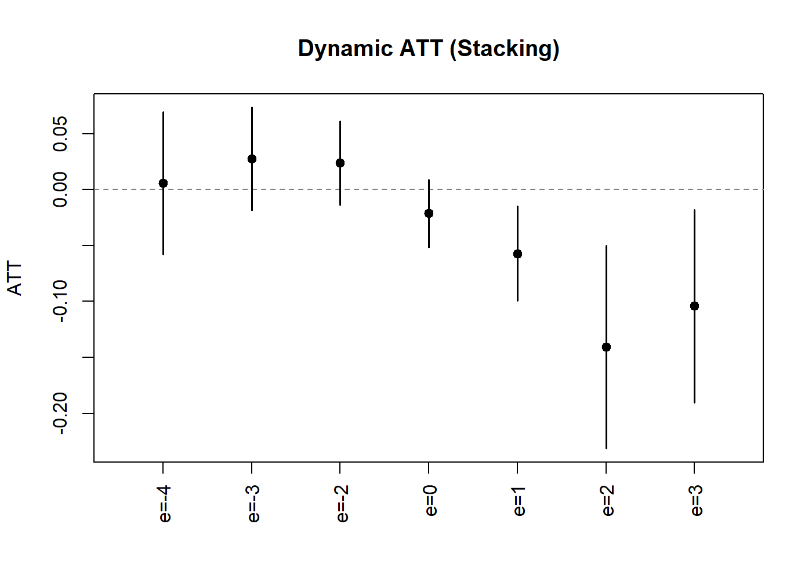
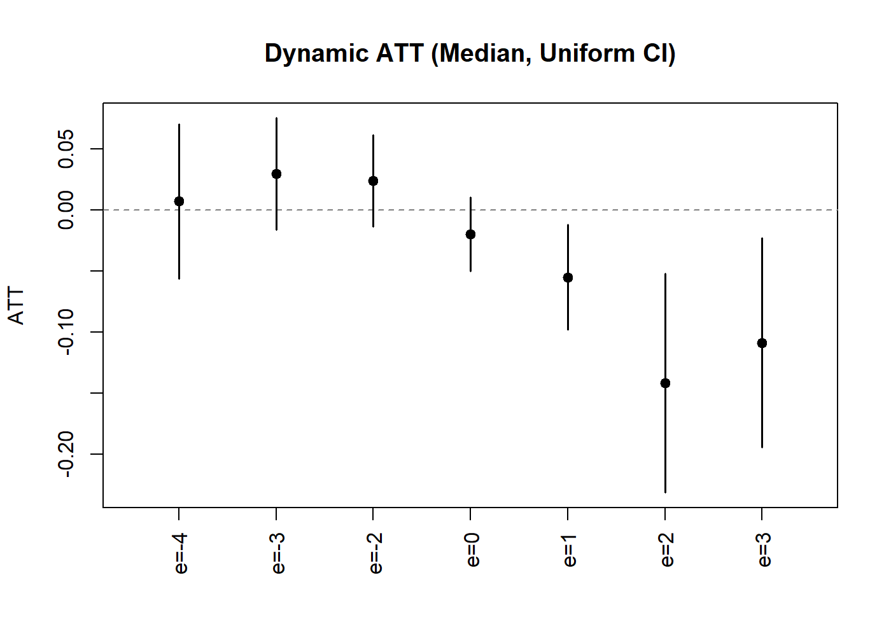

Introduction
This article illustrates how ddml provides a fully
self-contained pipeline for difference-in-differences estimation in
staggered adoption designs. The workflow consists of four steps:
-
Estimation of group-time average treatment effects
(GT-ATTs) via
ddml_attgt. -
Aggregation into dynamic event-study parameters via
lincom_weights_didandlincom. - Diagnostics to inspect stacking weights and learner performance.
-
Inference including uniform confidence bands via
the multiplier bootstrap, and event-study plots via
plot.
This pipeline does not require the did package for
inference or plotting. However, we begin by computing baseline estimates
with did::att_gt for comparison.
Data
We use the dataset of Callaway and Sant’Anna (2021) on county-level
teen employment rates from 2003–2007. The outcome is log-employment
(lemp) and we assume parallel trends hold conditional on
log county population (lpop).
ddml_attgt takes data in wide format: an
outcome matrix, a time-invariant covariate matrix, and a group
vector:
# Reshape to wide format
ids <- sort(unique(mpdta$countyreal))
times <- sort(unique(mpdta$year))
n <- length(ids)
T_ <- length(times)
# Build outcome matrix (n x T_)
y <- matrix(NA_real_, n, T_)
for (j in seq_along(times)) {
sub <- mpdta[mpdta$year == times[j], ]
y[match(sub$countyreal, ids), j] <- sub$lemp
}
# Extract time-invariant covariates and group membership
first_obs <- mpdta[match(ids, mpdta$countyreal), ]
G <- first_obs$first.treat
G[G == 0] <- Inf # ddml convention for never-treated
X <- as.matrix(first_obs[, "lpop", drop = FALSE])
cat("Units:", n, " Periods:", T_, " Groups:", length(unique(G)))
#> Units: 500 Periods: 5 Groups: 4Baseline: did Package
For comparison, we first estimate the GT-ATTs using the
did package with linear controls. We set
base_period = "universal" to match the base period
convention used by ddml_attgt:
attgt_lm <- att_gt(yname = "lemp",
gname = "first.treat",
idname = "countyreal",
tname = "year",
xformla = ~lpop,
base_period = "universal",
data = mpdta)
dyn_lm <- aggte(attgt_lm, type = "dynamic")
summary(dyn_lm)
#>
#> Call:
#> aggte(MP = attgt_lm, type = "dynamic")
#>
#> Reference: Callaway, Brantly and Pedro H.C. Sant'Anna. "Difference-in-Differences with Multiple Time Periods." Journal of Econometrics, Vol. 225, No. 2, pp. 200-230, 2021. <https://doi.org/10.1016/j.jeconom.2020.12.001>, <https://arxiv.org/abs/1803.09015>
#>
#>
#> Overall summary of ATT's based on event-study/dynamic aggregation:
#> ATT Std. Error [ 95% Conf. Int.]
#> -0.0804 0.0209 -0.1213 -0.0394 *
#>
#>
#> Dynamic Effects:
#> Event time Estimate Std. Error [95% Simult. Conf. Band]
#> -4 0.0063 0.0234 -0.0517 0.0643
#> -3 0.0269 0.0183 -0.0186 0.0724
#> -2 0.0232 0.0150 -0.0140 0.0605
#> -1 0.0000 NA NA NA
#> 0 -0.0211 0.0124 -0.0518 0.0096
#> 1 -0.0530 0.0163 -0.0935 -0.0125 *
#> 2 -0.1404 0.0393 -0.2379 -0.0430 *
#> 3 -0.1069 0.0355 -0.1950 -0.0188 *
#> ---
#> Signif. codes: `*' confidence band does not cover 0
#>
#> Control Group: Never Treated, Anticipation Periods: 0
#> Estimation Method: Doubly RobustGT-ATT Estimation with ddml_attgt
We estimate GT-ATTs using ddml_attgt. To validate
against the did baseline, we start with OLS:
fit_ols <- ddml_attgt(y, X, t = times, G = G,
learners = list(what = ols),
learners_qX = list(what = mdl_glm),
sample_folds = 10,
silent = TRUE)
summary(fit_ols)
#> DDML estimation: Group-Time Average Treatment Effects on the Treated
#> Obs: 500 Folds: 10
#>
#> Estimate Std. Error z value Pr(>|z|)
#> ATT(2004,2004) -0.02329 0.02200 -1.06 0.2899
#> ATT(2004,2005) -0.08196 0.02871 -2.85 0.0043 **
#> ATT(2004,2006) -0.14114 0.03434 -4.11 4e-05 ***
#> ATT(2004,2007) -0.10817 0.03346 -3.23 0.0012 **
#> ATT(2006,2003) 0.01463 0.03026 0.48 0.6286
#> ATT(2006,2004) 0.00572 0.01818 0.31 0.7531
#> ATT(2006,2006) 0.00913 0.01716 0.53 0.5949
#> ATT(2006,2007) -0.04021 0.01993 -2.02 0.0436 *
#> ATT(2007,2003) 0.00527 0.02499 0.21 0.8331
#> ATT(2007,2004) 0.03271 0.02152 1.52 0.1284
#> ATT(2007,2005) 0.02758 0.01855 1.49 0.1370
#> ATT(2007,2007) -0.02853 0.01647 -1.73 0.0831 .
#> ---
#> Signif. codes: 0 '***' 0.001 '**' 0.01 '*' 0.05 '.' 0.1 ' ' 1Dynamic Aggregation via lincom
The lincom_weights_did function constructs the contrast
matrix
and the influence function for the estimated weights. The output is
passed directly to lincom for inference. For the dynamic
type, both pre-treatment (placebo) and post-treatment event times are
included:
w_dyn <- lincom_weights_did(fit_ols, type = "dynamic")
lc_dyn <- lincom(fit_ols, R = w_dyn$R,
inf_func_R = w_dyn$inf_func_R,
labels = w_dyn$labels)
summary(lc_dyn)
#> RAL estimation: Linear Combination
#> Obs: 500
#>
#> Estimate Std. Error z value Pr(>|z|)
#> e=-4 0.00527 0.02487 0.21 0.8323
#> e=-3 0.02848 0.01783 1.60 0.1102
#> e=-2 0.02247 0.01479 1.52 0.1287
#> e=0 -0.02010 0.01172 -1.71 0.0864 .
#> e=1 -0.05413 0.01652 -3.28 0.0011 **
#> e=2 -0.14114 0.03417 -4.13 3.6e-05 ***
#> e=3 -0.10817 0.03329 -3.25 0.0012 **
#> ---
#> Signif. codes: 0 '***' 0.001 '**' 0.01 '*' 0.05 '.' 0.1 ' ' 1Pre-treatment event times (e < 0) serve as placebo tests: under the parallel trends assumption, these should be close to zero.
The plot method produces an event-study style
coefficient plot:
plot(lc_dyn, uniform = TRUE, ylab = "ATT", main = "Dynamic ATT (OLS)")
Dynamic Treatment Effect Estimates (OLS).
Stacking-based Estimation
We next leverage (short-)stacking to combine multiple base learners. Including OLS and logit ensures that the simpler specifications are never spuriously discarded:
# Outcome learners
learners_y <- list(
list(what = ols),
list(what = mdl_xgboost,
args = list(nrounds = 50,
params = list(eta = 0.1, max_depth = 1),
early_stopping_rounds = 1)),
list(what = mdl_xgboost,
args = list(nrounds = 50,
params = list(eta = 0.1, max_depth = 3),
early_stopping_rounds = 1)),
list(what = mdl_ranger,
args = list(num.trees = 100, max.depth = 5)),
list(what = mdl_ranger,
args = list(num.trees = 100, max.depth = 10)))
# Propensity score learners
learners_ps <- list(
list(what = mdl_glm),
list(what = mdl_xgboost,
args = list(nrounds = 50,
params = list(eta = 0.1, max_depth = 1),
early_stopping_rounds = 1)),
list(what = mdl_xgboost,
args = list(nrounds = 50,
params = list(eta = 0.1, max_depth = 3),
early_stopping_rounds = 1)),
list(what = mdl_ranger,
args = list(num.trees = 100, max.depth = 5)),
list(what = mdl_ranger,
args = list(num.trees = 100, max.depth = 10)))
# Estimate with short-stacking
fit_stack <- ddml_attgt(y, X, t = times, G = G,
learners = learners_y,
learners_qX = learners_ps,
sample_folds = 5,
ensemble_type = "nnls",
shortstack = TRUE,
silent = TRUE)
w_dyn_s <- lincom_weights_did(fit_stack, type = "dynamic")
lc_dyn_s <- lincom(fit_stack, R = w_dyn_s$R,
inf_func_R = w_dyn_s$inf_func_R,
labels = w_dyn_s$labels)
summary(lc_dyn_s)
#> RAL estimation: Linear Combination
#> Obs: 500
#>
#> Estimate Std. Error z value Pr(>|z|)
#> e=-4 0.00588 0.02457 0.24 0.81096
#> e=-3 0.02752 0.01776 1.55 0.12113
#> e=-2 0.02371 0.01457 1.63 0.10356
#> e=0 -0.02131 0.01177 -1.81 0.07027 .
#> e=1 -0.05714 0.01628 -3.51 0.00045 ***
#> e=2 -0.14076 0.03499 -4.02 5.7e-05 ***
#> e=3 -0.10395 0.03332 -3.12 0.00181 **
#> ---
#> Signif. codes: 0 '***' 0.001 '**' 0.01 '*' 0.05 '.' 0.1 ' ' 1
plot(lc_dyn_s, uniform = TRUE, ylab = "ATT", main = "Dynamic ATT (Stacking)")
Dynamic Treatment Effect Estimates (Stacking).
Learner Diagnostics
The stacking weights reveal which learners contribute to the final estimates. We summarize the NNLS weights across all group-time cells for both the outcome and propensity score reduced forms:
# Extract diagnostics
diag_stack <- diagnostics(fit_stack)
# Helper: summarize stacking weights across (g,t) cells
summarize_weights <- function(diag, pattern) {
eqs <- grep(pattern, names(diag$tables), value = TRUE)
w_col <- grep("^weight_", names(diag$tables[[eqs[1]]]),
value = TRUE)[1]
w_mat <- sapply(eqs, function(eq) diag$tables[[eq]][[w_col]])
learner_names <- diag$tables[[eqs[1]]]$learner
keep <- !is.na(w_mat[, 1]) # exclude nnls1 from weights
w_mat <- w_mat[keep, , drop = FALSE]
learner_names <- learner_names[keep]
data.frame(
learner = learner_names,
min = round(apply(w_mat, 1, min), 4),
mean = round(apply(w_mat, 1, mean), 4),
max = round(apply(w_mat, 1, max), 4),
row.names = NULL)
}
cat("Outcome reduced form---stacking weights:\n")
#> Outcome reduced form---stacking weights:
print(summarize_weights(diag_stack, ":y_X_D0$"), row.names = FALSE)
#> learner min mean max
#> learner_1 0.1962 0.6213 0.9516
#> learner_2 0.0000 0.0330 0.1629
#> learner_3 0.0000 0.0000 0.0000
#> learner_4 0.0000 0.0036 0.0434
#> learner_5 0.0000 0.0118 0.1030
cat("\nPropensity score---stacking weights:\n")
#>
#> Propensity score---stacking weights:
print(summarize_weights(diag_stack, ":D_X$"), row.names = FALSE)
#> learner min mean max
#> learner_1 0.8434 0.9128 0.9516
#> learner_2 0.0000 0.0475 0.1071
#> learner_3 0.0000 0.0000 0.0000
#> learner_4 0.0000 0.0004 0.0045
#> learner_5 0.0000 0.0046 0.0551In this application with a single covariate, the parametric learners (OLS/logit) receive the vast majority of the stacking weight—reassuring us that the default linear estimator is adequate here.
Comparing Results
We compare the dynamic treatment effects from the OLS, stacking, and
did baseline estimators:
# Build comparison with all event times; base period e=-1 is 0 by definition
ols_full <- setNames(rep(0, length(dyn_lm$egt)), paste0("e=", dyn_lm$egt))
ols_full[w_dyn$labels] <- coef(lc_dyn)
stack_full <- setNames(rep(0, length(dyn_lm$egt)), paste0("e=", dyn_lm$egt))
stack_full[w_dyn_s$labels] <- coef(lc_dyn_s)
comparison <- data.frame(
event_time = paste0("e=", dyn_lm$egt),
did = round(dyn_lm$att.egt, 4),
ols = round(ols_full, 4),
stacking = round(stack_full, 4)
)
comparison$did[is.na(comparison$did)] <- 0
print(comparison, row.names = FALSE)
#> event_time did ols stacking
#> e=-4 0.0063 0.0053 0.0059
#> e=-3 0.0269 0.0285 0.0275
#> e=-2 0.0232 0.0225 0.0237
#> e=-1 0.0000 0.0000 0.0000
#> e=0 -0.0211 -0.0201 -0.0213
#> e=1 -0.0530 -0.0541 -0.0571
#> e=2 -0.1404 -0.1411 -0.1408
#> e=3 -0.1069 -0.1082 -0.1040Repeated Resampling with Uniform Inference
To account for sample-splitting variability, we can repeat
cross-fitting several times and aggregate results. The
ddml_replicate function provides this functionality.
Combined with lincom, we obtain aggregated dynamic
treatment effects with uniform confidence bands:
fit_rep <- ddml_replicate(
ddml_attgt,
y = y, X = X, t = times, G = G,
learners = learners_y,
learners_qX = learners_ps,
sample_folds = 5,
ensemble_type = "nnls",
shortstack = TRUE,
resamples = 5,
silent = TRUE
)
# lincom on replicated fits
w_dyn_r <- lincom_weights_did(fit_rep, type = "dynamic")
lc_dyn_r <- lincom(fit_rep, R = w_dyn_r$R,
inf_func_R = w_dyn_r$inf_func_R,
labels = w_dyn_r$labels)
summary(lc_dyn_r)
#> RAL estimation: Linear Combination
#> Obs: 500 Resamples: 5 Aggregation: median
#>
#> Estimate Std. Error z value Pr(>|z|)
#> e=-4 0.00713 0.02429 0.29 0.76917
#> e=-3 0.02957 0.01759 1.68 0.09282 .
#> e=-2 0.02405 0.01446 1.66 0.09629 .
#> e=0 -0.01985 0.01164 -1.71 0.08811 .
#> e=1 -0.05498 0.01655 -3.32 0.00089 ***
#> e=2 -0.14143 0.03446 -4.10 4.1e-05 ***
#> e=3 -0.10858 0.03288 -3.30 0.00096 ***
#> ---
#> Signif. codes: 0 '***' 0.001 '**' 0.01 '*' 0.05 '.' 0.1 ' ' 1The plot method for replicated objects displays median-aggregated
estimates with confidence bands. We can request uniform bands via
uniform = TRUE:
plot(lc_dyn_r, uniform = TRUE,
ylab = "ATT", main = "Dynamic ATT (Median, Uniform CI)")
Dynamic ATT with Uniform Confidence Bands.
The uniform bands are wider than pointwise intervals, providing
simultaneous coverage over all event times. Pointwise intervals are
available for reference via uniform = FALSE (the
default).
References
Ahrens A, Chernozhukov V, Hansen C B, Kozbur D, Schaffer M E, Wiemann T (2026). “An Introduction to Double/Debiased Machine Learning.” Journal of Economic Literature, forthcoming.
Ahrens A, Hansen C B, Schaffer M E, Wiemann T (2024). “Model Averaging and Double Machine Learning.” Journal of Applied Econometrics, 40(3): 249-269.
Callaway B, Sant’Anna P (2021). “Difference-in-differences with multiple time periods.” Journal of Econometrics, 225(2), 200-230.
Chang N-C (2020). “Double/debiased machine learning for difference-in-difference models.” The Econometrics Journal, 23(2), 177-191.
Chernozhukov V, Chetverikov D, Kato K (2013). “Gaussian approximations and multiplier bootstrap for maxima of sums of high-dimensional random vectors.” Annals of Statistics, 41(6), 2786-2819.